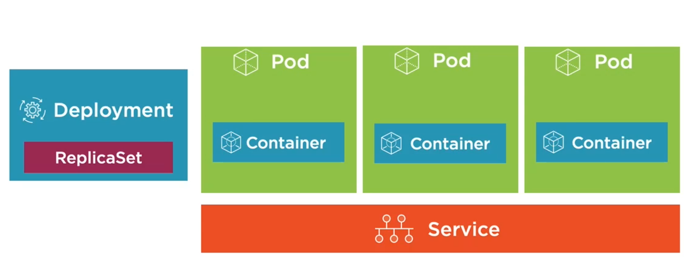
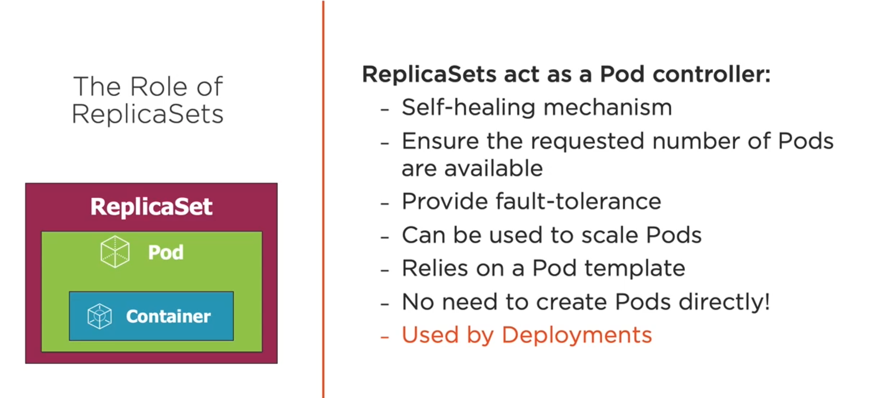
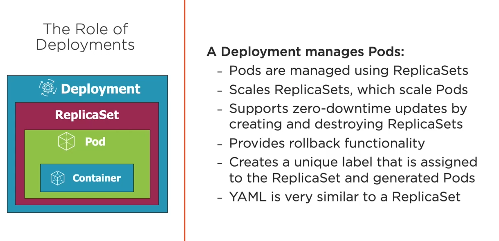
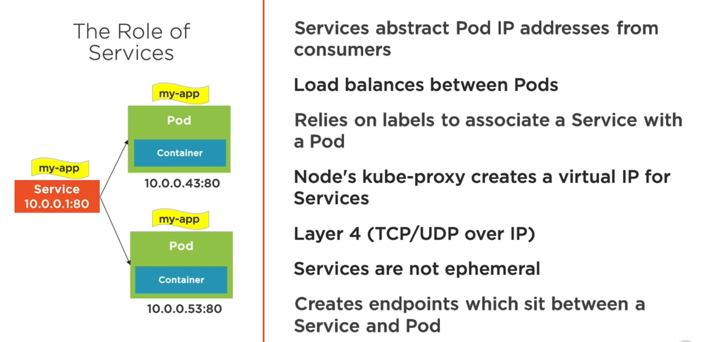
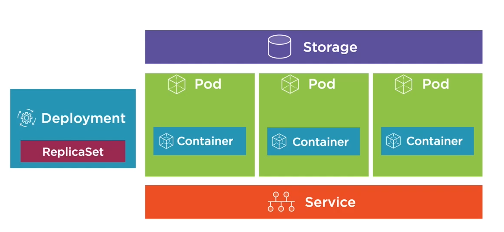
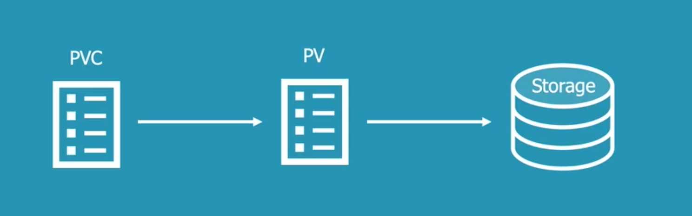
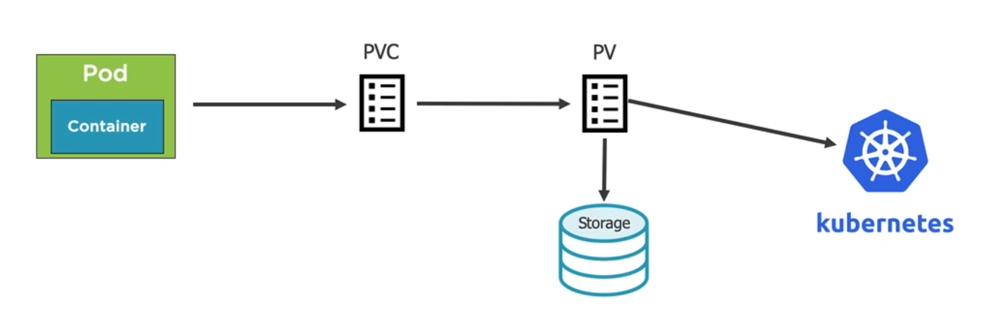

Kubernetes

List Docker CLI commands
$ kubectl version
# Run pods
$ kubectl run [podname] --image=imagename:version
# Lists only pods
$ kubectl get pods
# Lists all respources
$ kubectl get all
# Expose a pod port to access the pod
$ kubectl port-forward [name-of-pod] 8080:80
# Will cause pod to be recreated
$ kubectl delete pod [name-of-pod]
# Delete Deployment that manages the pod
$ kubectl delete deployment [name-of-pod-deployment]
YAML
- YAML files are composed of maps and lists
- Indentation matters ( be consistence! )
- Always use spaces
- Maps:
- name: value pairs
- Maps can contain other maps for more complex data structures
- Lists:
Defining a Pod with YAML
apiVersion: v1
kind: Pod
metadata:
name: mocktailbird-pod
labels:
component: web
spec:
containers:
- name: mocktailbird-app
image: mocktailbird_app:latest
ports:
- containerPort:8080
Creating a Pod Using YAML
# Perform a "trial" create and also validate the YAML
kubectl create -f file.pod.yml --dry-run --validate=true
# Create a pod from YAML
# Will error if Pod already exists
kubectl create -f file.pod.yml
# alternate way to create or apply chnages to a POD from YAML
kubectl apply -f file.pod.yml
# Use --save-config when you want to use
# kubectl apply in the future
kubectl create -f file.pod.yml --save-config
# alternate ways to apply
kubectl edit
kubectl patch
# Deleting a Pod
kubectl delete pod [name-of-pod]
# Delete Pod using YAML file that created it
kubectl delete -f file.pod.yml
#Shows information about event on pod/image/container
kubectl describe pod [pod-name]
# Go into container of the Pod
kubectl exec [pod-name] -it sh
# edit the pod in cmd
kubectl edit -f file.pod.yml
Health of Pods
Two Types:
-
Liveness probes: determine if a Pod is healthy and running as expected
apiVersion: v1 kind: Pod metadata: name: mocktailbird-pod spec: containers: - name: mocktailbird-app image: mocktailbird_app:latest livenessProbe: httpGet: path: /Hello port: 9080 initialDelaySeconds: 15 timeoutSeconds: 2 periodSeconds: 5 failureThreshold: 1 ports: - containerPort:9080ExecAction - Executes an action inside the container
TCPSocketAction - TCP check against the container's IP address on a specified port
HTTPGetAction - HTTP GET request against container
-
Readiness probes: determine if a Pod should receive requests
apiVersion: v1 kind: Pod metadata: name: mocktailbird-pod spec: containers: - name: mocktailbird-app image: mocktailbird_app:latest readinessProbe: httpGet: path: /Hello port: 9080 initialDelaySeconds: 2 periodSeconds: 5 ports: - containerPort:9080
Failed Pod containers are recreated by default(restartPolicy defaults to Always).
Replicasets & Deployments
A ReplicaSet is a declarative way to manage Pods

A Deployment is a declarative way to manage Pods using a ReplicaSet
If pod is destroyed the Deployments and ReplicaSets ensure Pods stay running and can be used to scale Pods

Defining a Deployment
Highe level
apiVersion: apps/v1
kind: Deployment
metadata:
spec:
selector:
template:
spec:
containers:
- name: mocktailbird-app
image: mocktailbird_app:latest
Deep
apiVersion: apps/v1
kind: Deployment
metadata:
name: web
labels:
app: mocktailbird
tier: services
spec:
replicas: 3
selector:
matchLabels:
tier: services
template:
metadata:
labels:
tier: services
spec:
containers:
- name: mocktailbird-app
image: mocktailbird_app:latest
# Create a Deployment
kubectl create -f file.deployment.yml
kubectl apply -f file.deployment.yml
# getting all deployments
kubectl get deployments
# List all Deployments and their labels
kubectl get deployment --show-labels
# get all deployments with a specific label
kubectl get deployment -l app=ngnix
# Delete a Deployment
kubectl delete deployment [deployment-name]
# Scale the Deployment Pods to %
kubectl scale deployment [deployment-name] --replicas=5
# Scale by refencing the YAML file
kubectl scale -f file.deployment.yml --replicas=5
Deployment Option
Zero dewntime deployments, update an application's pods without impacting end users
- Rolling updates
- Blue-green Deployments ( AB deployments)
- Canary deployments
- Rollbacks
Services
Single point of entry for accessing one or more Pods

Service Types:
-
ClusterIP - Expose the service on a cluster-internal IP(default)
-
NodePort - Expose the service on each Node's Ip at a static port
apiVersion: v1 kind: Service metadata: ... spec: type: NodePort selector: app: ngnix ports: - port:80 targetPort: 80 nodePort:31000 #optional will set default -
LoadBalancer - Provision an external IP to act as a load balancer for the service
apiVersion: v1 kind: Service metadata: ... spec: type: LoadBalancer selector: app: ngnix ports: - port:80 targetPort: 80LoadBalancer wont work in local (with out cluster setup) use other METALLB setup for testing loadbalancer.
-
ExternalName - maps a service to a DNS name
apiVersion: v1 kind: Service metadata: name: external-service spec: type: ExternalName externalName: api.acmecorp.com ports: - port:80# Listen on port 8080 locally and forward to port 80 in Pod kubectl port-forward pod/[pod-name] 8080:80 # Listen on port 8080 locally and forward to Deployment's Pod kubectl port-forward deployment/[deployment-name] 8080 # Listen on port 8080 locally and forward to Service's Pod kubectl port-forward service/[service-name] 8080Service with YAML
apiVersion: v1 kind: Service metadata: name: mocktailbird-pod spec: containers: - name: mocktailbird-app image: mocktailbird_app:latest livenessProbe: httpGet: path: /Hello port: 9080 initialDelaySeconds: 15 timeoutSeconds: 2 periodSeconds: 5 failureThreshold: 1 ports: - containerPort:9080# Create a service kubectl create -f file.service.yml --save-congfig # update a service kubectl apply -f file.service.yml # Delete service kubectl delete -f file.service.yml # shell into a Pod and test a URL. Add -c [containerID] # in cases where multiple containers are running in the POD // if curl exists kubectl exec [pod-name] -- curl -s http://podIP
Storage

Volumes
- A volume references a storage location
- Must have a unique name
- Attached to a Pod and may or may not be tied to the Pod's lifetime(depending on the volume type)
- A volume mount reference a Volume by name and defines a mountPath
Volume Types
-
EmptyDir - Empty directory for storing "transient" data (shares a Pod's lifetime) useful for sharing files between containers ruinning in a Pod.
apiVersion: v1 kind: Pod spec: volumes: - name: html emptyDir: {} containers: - name: ngnix image: ngnix:alpine volumeMounts: - name: html mountPath: /usr/share/ngnix/html readonly: true - name: html-update image: alpine command: ["/bin/sh", "-c"] args: - while true; do date >> /html/index.html; sleep 10; done volumeMounts: - name: html mountPath: /html -
hostPath - Pod mounts into the node's filesystem
apiVersion: v1 kind: Pod spec: volumes: - name: docker-socket hostPath: path: /var/run/docker.sock type: Socket containers: - name: docker image: docker command: ["sleep"] args: ["10000"] volumeMounts: - name: docker-socket mountPath: /var/run/docker.sock -
nfs - An NFS (Network File System) share mounted into the Pod
-
configMap/secret - Special types of volumes that provide a Pod with access to Kubernetes resources
-
persistentVolumeClaim - Provide pods with a more persistent storage option that is abstracted from the details
-
Cloud - CLuster-wide storage
-
Azure - Azure Disk and Azure File
apiVersion: v1 kind: Pod spec: volumes: - name: data azureFile: secretnName: <azure-secret> shareName: <share-name> readOnly: false containers: - name: my-app image: someimage volumeMounts: - name: data mountPath: /data/storage -
AWS - Elastic Block Store
apiVersion: v1 kind: Pod spec: volumes: - name: data awsElasticBlockStore: volumeID: <volume_ID> fsType: ext4 containers: - name: my-app image: someimage volumeMounts: - name: data mountPath: /data/storage -
GCP - GCE Persistent Disk
apiVersion: v1 kind: Pod spec: volumes: - name: data gcePersistentDisk: pdName: datastorage fsType: ext4 containers: - name: my-app image: someimage volumeMounts: - name: data mountPath: /data/storage
-
Viewing a Pod's Volumes
# Describe Pod
kubectl describe pod [pod-name]
# Get Pod YAML
kubectl get pod [pod-name] -o yaml
PersistentVaolume( PV )
Is a cluster-wide storage unit provisioned by an administrator with a lifecycle independent from a Pod.
A PersistentVolumeClaim (PVC) is a request for a storage unti(PV)


Defining a Persistent Volume for Azure
apiVersion: v1
kind: PersistentVolume
metadata:
name: my-pv
spec:
capacity: 10Gi
accessModes:
- ReadWriteOnce
- ReadOnlyMany
persistentVolumeRelaimPolicy: Retain
azureFile:
secretName: <azure-secret>
shareName: <name_from_azure>
readOnly: false
Defining a PersistentVolumeClaim
apiVersion: v1
kind: PersistentVolume
metadata:
name: pv-dd-account-hdd-5g
annotations:
volume.beta.kubernetes.io/storage-class: accounthdd
spec:
accessModes:
- ReadWriteOnce
resources:
requests:
storag: 5Gi
Using a PersistentVolumeClaim
apiVersion: v1
kind: Pod
metadata:
name: pod-uses-account-hdd-5g
labels:
name: storage
spec:
containers:
- image: nginx
name: az-c-01
command:
- /bin/sh
- -c
- while true; do ech0 $(date) >>
/mnt/blobdisk/outfile; sleep 1; done
volumeMounts:
- name: blobdisk01
mountPath: /mnt/blobdisk
volumes:
- name: blobdisk01
persistentVolumeClaim:
claimName: pv-dd-account-hdd-5g
StorageClass
A StorageClass (SC) is a type of storgae template that can be used to dynamically provision storage.

Defining a Local Storage StorageClass
apiVersion: storage.k8s.io/v1
kind: StorageClass
metadata:
name: local-storage
reclaimPolicy: Retain
provisioner: kubernetes.io/no-provisioner
volumeBindingMode: WaitForFirstConsumer
Defining a Local Storage PersistentVolume
apiVersion: v1
kind: PersistentVolume
metadata:
name: my-pv
spec:
capacity:
storage: 10Gi
volumeMode: Block
accessModes:
- ReadWriteOnce
storgaeClassname: local-storage
local:
path: /data/storage
nodeAffinity:
required:
nodeSelectorTerms:
- matchExpressions:
- key: kubernetes.io/hostname
operator: In
values:
- <node-name>
Defining a PersistentVolumeClaim
apiVersion: v1
kind: PersistentVolumeClaim
metadata:
name: my-pvc
spec:
accessModes:
- ReadWriteOnce
storageClassName: local-storage
resources:
requests:
storage: 1Gi
Using a PersistentVolumeClaim
apiVersion: apps/v1
kind: [Pod | StatefulSet | Deployment]
...
spec:
volumes:
- name: my-volume
persistentVolumeClaim:
claimName: my-pvc